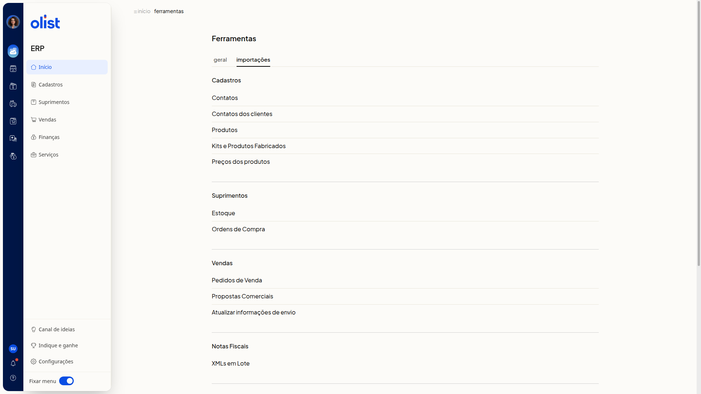

Validações na importação de produtos
Descrição
Na importação de produtos por planilha, o ERP da Olist confere o arquivo antes de criar ou atualizar os produtos. A validação aponta a linha e o motivo da falha, para você corrigir a planilha.
Você abre a página Importação de produtos via planilha por Início > Ferramentas, na aba Importações, em Produtos no grupo Cadastros, ou por Cadastros > Produtos > Mais ações > Importar produtos de uma planilha. O link Dicas para preencher corretamente abre o artigo Importar planilha de produtos.
Pré-requisitos
- Esteja no ERP, já autenticado.
- Tenha permissão de Produtos e de importação de registros, com permissão para incluir e editar produtos.
- Use a planilha modelo baixada nesta tela. Um modelo diferente do layout da Olist não deve ser usado.
- Preencha a planilha antes do envio.
Importante
- Use o layout padrão baixado nesta tela. Não use um modelo diferente do da Olist, não altere os nomes das colunas, não mude a ordem do cabeçalho e não exclua colunas.
- O arquivo enviado deve ser Excel (.xls ou.xlsx) ou texto (.csv), com até 2 Mb e até 500 registros.
- No painel Download do layout, as opções são Excel (.xls) e Texto (.csv).
- Deixe as células opcionais em branco. Use Sim ou Não e os códigos de Origem. Sem esses termos, a importação é bloqueada.
- Para vincular o fornecedor, ele já precisa estar cadastrado com o mesmo nome informado na planilha.
Instruções
-
Acesse Início > Ferramentas.
-
Abra a aba Importações.

-
No grupo Cadastros, clique em Produtos.

-
Leia as Orientações da página.
-
Abra as perguntas da página sobre layout, limite de registros, colunas obrigatórias e variações.
-
Acesse o link Dicas para preencher corretamente.
-
No passo Baixe a planilha modelo para importar produtos, clique em baixar planilha.
-
No painel Download do layout, escolha Excel (.xls) ou Texto (.csv).

-
Preencha a planilha com estas regras:
- informe as colunas obrigatórias Descrição, Sob Encomenda e Situação
- em Situação, use Ativo ou Inativo
- em Sob Encomenda, use Sim ou Não
- nos dados fiscais, preencha Unidade, NCM com 8 dígitos e Origem com código de 0 a 8
- deixe ID em branco para produto novo
- informe o ID exato para atualizar um produto
- no produto pai, use Tipo de Produto V
- no produto filho, use Tipo de Produto S, K, F ou M, nunca V
- preencha Código do Pai no produto filho
- em Variações, use o formato Tamanho:GG||Cor:Branco
- informe até 10 URLs diretas de imagem: as colunas 1 a 6 são armazenadas e as colunas 7 a 10 são externas
- em categorias, use o formato Nível 1 > Nível 2 > Nível 3
- No passo Envie a planilha preenchida com seus produtos, clique em enviar planilha. A validação mostra a linha e o motivo da falha. Se a planilha estiver correta, os produtos são criados ou atualizados.
Informações adicionais
O preço promocional depende do módulo
O preço promocional informado na planilha só é importado se a empresa tiver o módulo de preço promocional.
As imagens dependem do espaço de anexos
As imagens das colunas de URL imagem só são importadas se houver espaço de anexos disponível.
Links relacionados
O artigo Importar planilha de produtos detalha o preenchimento e a finalização da importação. Se a validação continuar indicando falha, fale com o suporte.